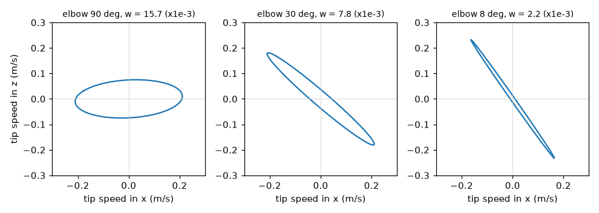
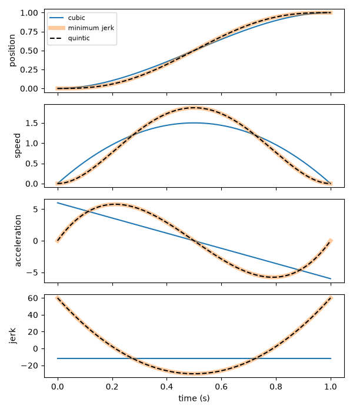
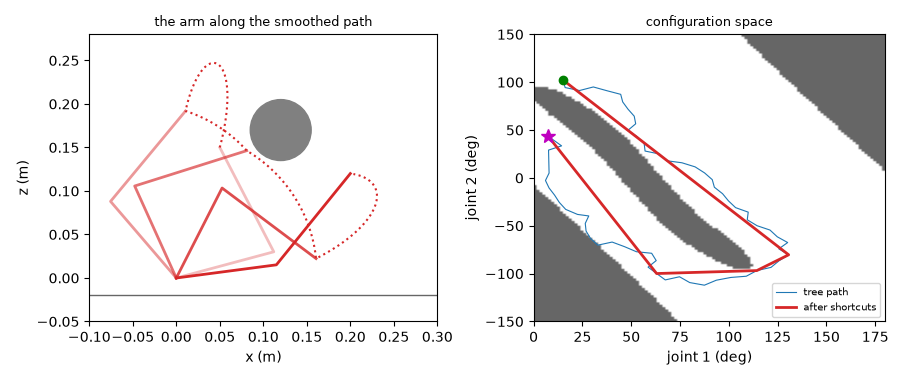
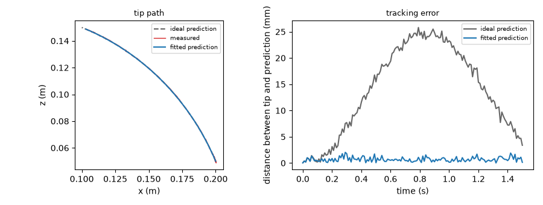
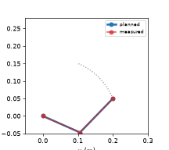

Optional Advanced Chapter: The Mathematics of Arm Paths¶
Summary¶
This optional chapter is for readers who want the mathematics behind arm paths. It covers rotation matrices and quaternions, the Jacobian and singularities, polynomial and minimum-jerk trajectories, path planning around obstacles, and predicting a path and comparing it with the real arm. After this chapter, you will be able to predict and check an arm's path in Python.
Concepts Covered¶
This chapter covers the following 53 concepts from the learning graph:
| Concept | Concept Impact Score |
|---|---|
| Derivative as Rate of Change | 19 |
| Matrix Multiplication | 14 |
| Configuration Space | 14 |
| Linear Algebra with NumPy | 13 |
| Path vs Trajectory | 12 |
| Numerical Differentiation | 8 |
| Boundary Conditions | 8 |
| Cubic Polynomial Trajectory | 7 |
| Obstacle Representation | 7 |
| Path Prediction | 7 |
| Numerical Jacobian | 6 |
| Static Torque Estimate | 6 |
| Sampling-Based Planning | 6 |
| Jacobian Pseudoinverse | 5 |
| Manipulability | 5 |
| SciPy Interpolation | 5 |
| RRT Algorithm | 5 |
| Predicted vs Measured Path | 5 |
| Axis-Angle Rotation | 4 |
| Damped Least Squares | 4 |
| Cubic Spline | 4 |
| Tracking Error | 4 |
| Quaternion | 3 |
| Moment Arm | 3 |
| Euler Angles | 2 |
| Quaternion Rotation | 2 |
| Jacobian-Based IK | 2 |
| Condition Number | 2 |
| Quintic Polynomial Trajectory | 2 |
| Jerk | 2 |
| Time Scaling | 2 |
| Gravity Load on Joints | 2 |
| Path Smoothing | 2 |
| Joint-Limit Constrained Planning | 2 |
| Gimbal Lock | 1 |
| SLERP | 1 |
| Velocity Kinematics | 1 |
| Manipulability Ellipse | 1 |
| Singularity Avoidance | 1 |
| Minimum-Jerk Trajectory | 1 |
| Via-Point Trajectory | 1 |
| Velocity Limit Scaling | 1 |
| Cartesian Straight-Line Path | 1 |
| Path Parameterization | 1 |
| Servo Torque Margin | 1 |
| Shortcut Smoothing | 1 |
| Path Safety Check | 1 |
| Forward Simulation of Paths | 1 |
| RMSE | 1 |
| Maximum Deviation | 1 |
| Prediction Error Sources | 1 |
| SciPy Optimize | 1 |
| Matplotlib Animation | 1 |
Prerequisites¶
This chapter builds on concepts from:
- Chapter 1: Setting Up Python for Robotics
- Chapter 2: Anatomy of a Robot Arm
- Chapter 3: Electricity, Power, and Safety Basics
- Chapter 5: Actuators and Sensors
- Chapter 10: A Python Hardware Library for Robot Arms
- Chapter 11: Moving the Arm: Trajectories, Grippers, and Teleoperation
- Chapter 12: Kinematics: Where Is the Hand and How Do I Get There
- Chapter 13: Logging, Testing, Simulation, and ROS 2
Welcome to the Optional Math Chapter!
 You can run every project in this book without this chapter, so reading it is a choice. If you chose it, you want to know why my paths look the way they do, and how to predict them before I move. I will carry the heavy parts, and Python will check every formula. Let's move it!
You can run every project in this book without this chapter, so reading it is a choice. If you chose it, you want to know why my paths look the way they do, and how to predict them before I move. I will carry the heavy parts, and Python will check every formula. Let's move it!
The rest of the book showed what to do: calibrate, move, solve inverse kinematics, plan, and stay safe. This chapter explains what is underneath. Why does a joint-space move bow the tip sideways? What is a quaternion, and why do robots prefer them? Why do the joints race when the arm straightens out, and what does a damped step do about it? Why is the "smooth" move of Chapter 11 not the smoothest possible? How do you plan a path around a block, and how well can you predict where the tip will really go?
The chapter has seven parts: tools (derivatives and matrices), rotations, velocity and the Jacobian, trajectories, loads on the joints, planning around obstacles, and prediction. Each part follows one rule: every formula is checked by code. The lab builds six small modules, each with a script that prints real numbers, and a test suite that compares them with SciPy and with exact results. The arm used throughout is the flat two-link model of Chapter 12, with the SO-101's upper arm of 116 mm and forearm of 135 mm (taken from the URDF), so that the numbers mean something. It is an approximation of the real arm, which has small offsets out of the plane, and each part says where that matters.
Read the Words, Run the Code, Skip the Algebra if You Like
 Every section states the idea in plain words first, then gives the formula, then the lab checks it with numbers. If a derivation looks heavy, skip it: the code shows that the result is right, and the result is what you use.
Every section states the idea in plain words first, then gives the formula, then the lab checks it with numbers. If a derivation looks heavy, skip it: the code shows that the result is right, and the result is what you use.
Tools: Rates of Change and Matrices¶
Derivative as Rate of Change¶
A derivative as rate of change says how fast a quantity changes: the derivative of a joint's angle with respect to time is its angular speed, and the derivative of speed is its acceleration. In symbols, for a function \( f(t) \),
Everything in the chapter is built from a few such rates: speed (rate of change of position), acceleration (rate of change of speed), jerk (rate of change of acceleration, which is how suddenly the acceleration itself changes, and so how hard the arm is jolted), and the Jacobian (the rate of change of the tip position with each joint angle). A derivative is also a slope: the speed is the slope of the position curve, and a joint standing still has a flat one.
Numerical Differentiation¶
You often have numbers and not a formula: the samples that the arm logged at 100 Hz. Numerical differentiation estimates the derivative from the samples. The simplest estimate takes a small step \( h \) and uses the formula above without the limit, which is the forward difference. A better one looks on both sides:
which is the central difference, and its error shrinks with \( h^2 \) where the forward difference only shrinks with \( h \). NumPy's np.gradient does the central version for samples. There is a trade-off in the choice of \( h \): a large step gives a truncation error (the formula is only an approximation), and a tiny step gives a round-off error (the computer subtracts two numbers that are almost equal and loses digits). The lab shows both on the sine function at \( x = 1 \), where the true slope is \( \cos 1 = 0.540302 \).
Matrix Multiplication and Linear Algebra with NumPy¶
Matrix multiplication combines two grids of numbers into one: entry \( (i, j) \) of the product \( AB \) is the sum of row \( i \) of \( A \) times column \( j \) of \( B \). It matters because it is how transforms combine (Chapter 12): first apply \( B \), then \( A \), and write \( AB \). The key fact is that order matters: \( AB \neq BA \) in general. Turning the \( x \) axis by 90° about \( x \) and then about \( z \) is not the same as the other order, and the lab prints both results to show it.
Linear algebra with NumPy gives you the operations that the rest of the chapter uses, each in a line. A @ B is the product. np.linalg.solve(A, b) finds the \( x \) for which \( A x = b \). np.linalg.pinv(A) is the pseudoinverse, which works even for a matrix that has no ordinary inverse. np.linalg.svd(A, compute_uv=False) returns the singular values, which say how much \( A \) stretches the space in each direction. And np.linalg.cond(A) gives the ratio of the largest to the smallest of them. Use solve and not inv when you can: it is faster and more accurate.
Rotations in Four Forms¶
A rotation in three dimensions has three degrees of freedom, and there are four common ways to write one. Each is good at something, and a robot program often converts between them.
Euler Angles and Gimbal Lock¶
Euler angles describe a rotation as three turns about three axes in a fixed order, such as yaw (about the vertical \( z \) axis), then pitch (about \( y \)), then roll (about \( x \)). They are easy to picture and to type, and they are what most people mean by "orientation". Their weakness is gimbal lock: when the middle angle is ±90°, the first and third turns act about the same axis, and one degree of freedom is lost. In the lab, a yaw of 0.5 rad with a roll of 0.2 rad and a pitch of 90° is exactly the same rotation as a yaw of 0.3 rad with a roll of 0: only the difference of yaw and roll matters, and there is no way to recover both from the matrix. Near gimbal lock the angles also change wildly for a small change of orientation. A robot that works in Euler angles has to avoid, or detect, this pose.
Axis-Angle Rotation¶
An axis-angle rotation says that every 3D rotation is a single turn by an angle \( \theta \) about one axis \( \hat n \). Rodrigues' formula turns it into a matrix:
where \( K \) is the matrix for which \( K v = \hat n \times v \), the cross product. Going the other way, \( \theta = \arccos\big((\operatorname{trace} R - 1)/2\big) \), and the axis comes from the off-diagonal differences of \( R \). Axis-angle has no gimbal lock, but it is awkward to combine, and the axis is undefined when there is no rotation.
Quaternions and Quaternion Rotation¶
A quaternion stores a rotation as four numbers \( q = (w, x, y, z) \) built from the axis and angle: \( q = (\cos\tfrac{\theta}{2},\ \sin\tfrac{\theta}{2}\,\hat n) \). A quaternion that stands for a rotation has length 1. Two facts to remember: \( q \) and \( -q \) are the same rotation, and the half angle is what makes the formulas work.
Quaternion rotation turns a vector \( v \) by sandwiching it: write \( v \) as the quaternion \( (0, v) \), and compute \( q\,(0, v)\,q^{*} \), where \( q^{*} = (w, -x, -y, -z) \) is the conjugate (the inverse, for a unit quaternion). Combining two rotations is the quaternion product \( q_a q_b \), which agrees with the matrix product \( R_a R_b \). The lab verifies all of it against SciPy's Rotation. (A warning: SciPy writes quaternions as \( (x, y, z, w) \), with the \( w \) last, and this chapter writes \( w \) first. Check the order of any library before you mix them.) Quaternions are small, have no gimbal lock, are cheap to multiply and renormalize, and interpolate well. That is why robot libraries use them inside, even when they show you Euler angles.
SLERP¶
SLERP, spherical linear interpolation, finds the rotations between two orientations at a constant angular speed. With \( \cos\Omega = q_0 \cdot q_1 \),
If the dot product is negative, negate \( q_1 \) first, so that the rotation takes the short way round. The lab turns from no rotation to 120° about \( z \) and reports the angle at a quarter, a half and three quarters of the way: SLERP gives 30°, 60° and 90°, steps of equal size. A straight blend of the four numbers, made unit length again, gives 27.8°, 60° and 92.2°, so the orientation speeds up in the middle. For a camera or a gripper that should turn smoothly, use SLERP.
Pick the Form That Fits the Job
 Euler angles are for people to read and type, matrices are for transforming points, axis-angle is for "turn this much about that line", and quaternions are for storing, combining and interpolating. Convert freely, but keep each in its job, and watch the pitch of 90 degrees.
Euler angles are for people to read and type, matrices are for transforming points, axis-angle is for "turn this much about that line", and quaternions are for storing, combining and interpolating. Convert freely, but keep each in its job, and watch the pitch of 90 degrees.
Diagram: Quaternion Calculator¶
Run the Quaternion Calculator MicroSim fullscreen
Quaternion Calculator
Type: microsim
sim-id: quaternion-calculator
Library: p5.js
Status: Specified
Bloom Level: Apply
Bloom Verb: calculate
Learning Objective: The learner will calculate quaternion components, turn angles and SLERP angles from given rotations, to within 0.1 of the unit shown, in six problems, with at least 5 of 6 correct on the first attempt.
Prerequisites: quaternion, unit quaternion, axis and angle, SLERP, dot product (all defined in the section "Rotations in Four Forms" above this block).
Evidence of Mastery: For each of six problems the learner types a number in the unit shown and commits. An answer is correct when it is within 0.1 of the Correct column in Content. Mastery is 5 of 6 correct on the first attempt. Changing the axis and angle in Explore mode is exploration, not evidence.
Misconceptions: (1) The w of a quaternion is the cosine of the full angle. (It is the cosine of half the angle.) (2) SLERP at one quarter of the way is a quarter of the numbers. (It is a quarter of the angle.) (3) The angle between two rotations is the arccosine of the dot product. (It is twice that.)
Instructional Rationale: An Apply-level calculate objective needs repeated use of a few formulas on new numbers with an immediate check. The half angle is the step that most learners miss, so each formula appears in at least one problem.
Content:
Explore mode shows two sliders, for the axis (about x, y or z) and the angle, and the resulting quaternion. Formulas: q = (cos(angle / 2), sin(angle / 2) x axis); angle = 2 x arccos(w); w = the square root of (1 - x^2 - y^2 - z^2) for a unit quaternion; SLERP at fraction t between no turn and a turn of A degrees is a turn of t x A degrees; the angle between two rotations whose quaternions have dot product d is 2 x arccos(d).
| Quantity | Min | Max | Step | Default | Unit |
|---|---|---|---|---|---|
| Angle | 0 | 180 | 5 | 90 | degrees |
| Axis | x | z | one of three | z | none |
Six problems in this fixed order:
| # | Problem | Unit asked | Correct | Why (shown as feedback) |
|---|---|---|---|---|
| 1 | What is w of the unit quaternion for a 60 degree turn about the x axis? (Answer as w x 100.) | w x 100 | 86.6 | w = cos(30 degrees) = 0.866, and 0.866 x 100 = 86.6. |
| 2 | A unit quaternion has w = 0.5. What angle does it turn? | degrees | 120.0 | angle = 2 x arccos(0.5) = 2 x 60 = 120 degrees. |
| 3 | A unit quaternion has x = 0.6 and y = z = 0. What is w? (Answer as w x 100, positive w.) | w x 100 | 80.0 | w = the square root of (1 - 0.36) = 0.8, and 0.8 x 100 = 80.0. |
| 4 | SLERP from no turn to a 120 degree turn about z, one quarter of the way. What angle has been turned? | degrees | 30.0 | A quarter of 120 degrees is 30 degrees. |
| 5 | SLERP from no turn to a 150 degree turn about z, at t = 0.4. What angle has been turned? | degrees | 60.0 | 0.4 x 150 = 60 degrees. |
| 6 | Two unit quaternions have a dot product of 0.5. What is the angle between the two rotations? | degrees | 120.0 | The angle is 2 x arccos(0.5) = 120 degrees. |
Provenance: The formulas are from the chapter section "Rotations in Four Forms" and were checked against SciPy's Rotation in the lab. The problems are illustrative and written for this sim.
Rules: w = cos(angle / 2). angle = 2 x arccos(w). w = the square root of (1 - x^2 - y^2 - z^2). SLERP turns an angle that is t times the total. The angle between rotations = 2 x arccos(dot product). An answer is correct when |typed - correct| <= 0.1.
Learner Activity:
- In Explore mode the learner changes the axis and the angle and watches the four numbers of the quaternion.
- The learner switches to the six problems. Problem 1 is shown.
- The learner types a number and presses Check to commit.
- The sim shows whether the answer was correct, the working and the Why text, then moves on. After problem 6 it shows the score.
Feedback: Six problems, fixed order, one attempt each. Correct: "Correct:
Starting State: Explore mode with the axis z and an angle of 90 degrees, showing the quaternion 0.7071, 0, 0, 0.7071.
Chapter Anchors: The chapter's quaternion is (cos of half the angle, sin of half the angle times the axis), and SLERP from no turn to 120 degrees about z gives 30, 60 and 90 degrees at a quarter, a half and three quarters. The sim has six problems and mastery is 5 of 6.
Velocity, the Jacobian, and Singularities¶
Velocity Kinematics¶
Velocity kinematics relates the speeds of the joints to the speed of the hand. Chapter 12 introduced the Jacobian \( J(q) \), the matrix for which
where \( \dot q \) is the vector of joint speeds and \( \dot p \) is the tip speed. For the two-link arm, with joint angles \( \theta_1 \) and \( \theta_2 \),
The numerical Jacobian gets the same matrix without any formula, by nudging each joint by a tiny angle and watching how the tip moves (one column per joint). The lab compares it with the formula at joint angles of 40° and 70°: the two agree to \( 10^{-7} \). This matters for arms with no tidy formula, such as the SO-101 with all its offsets, where the numerical Jacobian of Chapter 12 is what the inverse kinematics used.
Jacobian-Based IK, the Pseudoinverse and Damped Least Squares¶
Jacobian-based IK solves inverse kinematics by repeating small steps. If the tip is at \( p \) and the target is \( p^{*} \), the error is \( e = p^{*} - p \), and one step changes the joints by \( \Delta q \) such that \( J\,\Delta q \approx e \). Update the angles, compute the new error, and repeat until the error is tiny. The question is how to find \( \Delta q \).
The Jacobian pseudoinverse \( J^{+} \) gives \( \Delta q = J^{+} e \). For a square, non-singular \( J \) it is the ordinary inverse. It is exact in one step of the linearized problem, which is its charm, and its danger: near a singular pose \( J \) has a tiny singular value \( \sigma_{\min} \), and \( J^{+} \) has a huge one, \( 1/\sigma_{\min} \). A small error in the unlucky direction asks for an enormous joint motion.
Damped least squares (DLS, due to Wampler and to Nakamura and Hanafusa in 1986) gives up a little exactness for a lot of safety:
The damping \( \lambda \) keeps the step bounded: the largest gain is about \( 1/(2\lambda) \) instead of \( 1/\sigma_{\min} \). It is the method behind the numerical IK of Chapter 12, and the reBot's control library uses the same idea, with a damping of \( 10^{-6} \) that grows when the error is large. LeRobot's kinematics wraps a solver that takes a fixed small number of Newton steps (8 by default) from the current joints, and gives orientation a low weight. The lab compares the methods in two ways. First, it asks the tip to move in a straight line to a point outside the arm's reach of 0.251 m, at \( (0.26, 0) \). The pseudoinverse tries too hard: its largest joint step in one control step is 427.6°, and the arm ends in a nonsense pose with the elbow wound round to 814°. DLS takes steps of at most 4.6° and settles at the nearest point the arm can reach, \( (0.251, 0) \). Second, it solves IK for \( (0.15, 0.10) \) starting from the singular pose with both joints at zero. Both methods arrive, but the pseudoinverse winds the joints round, ending at −374.8° and 808.5°, which are the same pose as −14.8° and 88.5° plus whole turns, while DLS goes straight to −14.8° and 88.5°. An arm with joint limits could not follow the first path at all.
Manipulability, the Ellipse and the Condition Number¶
How well can the arm move the tip at a given pose? Manipulability, a measure due to Yoshikawa (1985), is
For a square \( J \) this is \( |\det J| \), so for the two-link arm \( w = l_1 l_2 |\sin\theta_2| \): large when the elbow is bent a right angle, zero when the arm is straight. The manipulability ellipse shows what this means. Take all joint-speed vectors of length 1, and map each through \( J \): the tip-speed vectors fill an ellipse. A round, large ellipse means the tip can move equally well in every direction. A long thin ellipse means that it moves fast along one line and hardly at all across it, and a flat one is a singularity.

The condition number \( \kappa = \sigma_{\max}/\sigma_{\min} \), from the singular values, measures the same thing as a ratio: 1 for a round ellipse, large for a thin one, and infinite at a singularity. The lab prints both as the elbow straightens from 90° to 0°, with joint 1 at 30°: \( w \) falls from 0.0157 to 0.0000 (it matches \( l_1 l_2 |\sin\theta_2| \) exactly), and \( \kappa \) climbs from 2.8 through 14.7 at 20° and 297 at 1° to infinity.
Singularity Avoidance¶
Singularity avoidance means keeping the arm away from poses where \( w \) is small, or softening the maths when it cannot. Three tools, in order of effort. Plan away from it: choose paths whose manipulability stays above a floor, and keep the elbow bent. Damp near it: use DLS with a damping that grows as \( w \) falls below a threshold \( w_0 \), as Nakamura and Hanafusa proposed:
So the steps are exact where it is safe and tame where it is not. The lab's adaptive_damping does this, with \( w_0 = 0.004 \) and \( \lambda_{\max} = 0.05 \). Limit the speed: scale all joint speeds down so that none exceeds its limit, which the time-scaling section below does. A robot that stops before a singularity is annoying, and one that does not is dangerous.
Diagram: Manipulability Calculator¶
Run the Manipulability Calculator MicroSim fullscreen
Manipulability Calculator
Type: microsim
sim-id: manipulability-calculator
Library: p5.js
Status: Specified
Bloom Level: Apply
Bloom Verb: calculate
Learning Objective: The learner will calculate the manipulability of a two-link arm from its link lengths and elbow bend, and compare two poses, to within 0.1 of the unit shown, in six problems, with at least 5 of 6 correct on the first attempt.
Prerequisites: Jacobian, determinant, manipulability, singular pose, sine (all defined in the section "Velocity, the Jacobian, and Singularities" above this block and in Chapter 12).
Evidence of Mastery: For each of six problems the learner types a number in the unit shown and commits. An answer is correct when it is within 0.1 of the Correct column in Content. Mastery is 5 of 6 correct on the first attempt. Moving the sliders in Explore mode is exploration, not evidence.
Misconceptions: (1) Manipulability depends on the shoulder angle. (For a two-link arm it depends only on the elbow bend and the link lengths.) (2) A straight arm is the most manipulable. (It is a singularity, with zero.) (3) Halving the bend halves the manipulability. (It follows the sine, so it falls more slowly at first and then faster.)
Instructional Rationale: An Apply-level calculate objective needs repeated use of one formula on new numbers. The formula w = l1 x l2 x |sin(bend)| is short, so the work is in the sine and the units, and a ratio problem shows how fast w falls near a singularity.
Content:
Explore mode shows two sliders for the elbow bend and the shoulder angle, the manipulability w, the condition number, and a small drawing of the ellipse. Link lengths are 0.116 m and 0.135 m unless a problem says otherwise. Answers are in units of 0.001 (that is, w x 1000). Formula: w = l1 x l2 x |sin(bend)|.
| Quantity | Min | Max | Step | Default | Unit |
|---|---|---|---|---|---|
| Elbow bend | 0 | 180 | 1 | 90 | degrees |
| Shoulder angle | 0 | 180 | 5 | 30 | degrees |
Six problems in this fixed order:
| # | Problem | Unit asked | Correct | Why (shown as feedback) |
|---|---|---|---|---|
| 1 | Links of 0.116 m and 0.135 m, elbow bent 90 degrees. What is w? | w x 1000 | 15.7 | w = 0.116 x 0.135 x 1 = 0.01566, so 15.7 in units of 0.001. |
| 2 | The same arm, elbow bent 30 degrees. What is w? | w x 1000 | 7.8 | w = 0.01566 x 0.5 = 0.00783, so 7.8. |
| 3 | The same arm, elbow bent 10 degrees. What is w? | w x 1000 | 2.7 | w = 0.01566 x sin(10 degrees) = 0.01566 x 0.1736 = 0.00272, so 2.7. |
| 4 | The same arm, elbow bent 45 degrees. What is w? | w x 1000 | 11.1 | w = 0.01566 x 0.7071 = 0.01107, so 11.1. |
| 5 | Links of 0.2 m and 0.2 m, elbow bent 60 degrees. What is w? | w x 1000 | 34.6 | w = 0.2 x 0.2 x 0.866 = 0.03464, so 34.6. |
| 6 | How many times smaller is w with the elbow bent 5 degrees than with it bent 90 degrees? | times | 11.5 | w(90) / w(5) = 1 / sin(5 degrees) = 1 / 0.08716 = 11.5. |
Provenance: The formula is the chapter's w = l1 x l2 x |sin(bend)|, which the lab checks against the square root of det(J J^T). The link lengths are the SO-101's upper arm and forearm from its URDF. The problems are illustrative and written for this sim.
Rules: w = l1 x l2 x |sin(bend)|. Answers are w x 1000, except problem 6, which is a ratio. An answer is correct when |typed - correct| <= 0.1.
Learner Activity:
- In Explore mode the learner moves the sliders and watches w, the condition number and the ellipse.
- The learner switches to the six problems. Problem 1 is shown.
- The learner types a number and presses Check to commit.
- The sim shows whether the answer was correct, the working and the Why text, then moves on. After problem 6 it shows the score.
Feedback: Six problems, fixed order, one attempt each. Correct: "Correct:
Starting State: Explore mode with the elbow bent 90 degrees and the shoulder at 30 degrees, showing w = 15.7 (x 0.001) and a condition number of 2.8.
Chapter Anchors: The chapter's manipulability of the two-link arm is l1 x l2 x |sin(bend)|, equal to 0.01566 for 0.116 m and 0.135 m links at a right angle, and it falls to zero as the arm straightens. The sim has six problems and mastery is 5 of 6.
Trajectories¶
Path vs Trajectory¶
A path vs trajectory distinction is the difference between where and where and when. A path is a shape in space (or in joint space): a list of poses, with no time on it. A trajectory is a path and a schedule: the pose at every instant, and so the speed and acceleration. Chapter 11 made trajectories out of paths with a speed profile. The same path can be driven by a gentle trajectory or a violent one, and the arm only cares about the trajectory.
Path parameterization is the step that connects the two: describe the path by a variable \( s \) that runs from 0 to 1, and then choose \( s(t) \), a function of time, as the schedule. The natural variable is arc length, the distance along the path, because then equal steps of \( s \) are equal steps in space. The lab takes a path whose points are unevenly spaced (15.3, 15.1, ... 13.7 mm apart) and re-samples it so that every step is 14.5 mm.
The shape of a path also depends on the space that you draw it in. A Cartesian straight-line path is straight in the space of the tip: do inverse kinematics at every point along the line. A path that is straight in joint space moves every joint at a proportional rate, and its tip takes a curved route. The lab joins the same two end poses, with the tip at \( (0.20, 0.05) \) and \( (0.10, 0.15) \), both ways: the joint-space line bows up to 14.2 mm away from the straight line, while the Cartesian line stays within 0.000 mm of it, and needs the joints to move by 31.7° and 18.7°, not in proportion. Use joint space when only the end matters, and Cartesian space when the route matters, as when carrying a full cup.
Boundary Conditions¶
Boundary conditions are the values that a trajectory must have at its two ends: the position, and perhaps the speed and the acceleration. They are what make a trajectory fit the moves around it. A move that starts from rest has zero speed at the start. A move that continues the previous one must start at the speed that the previous move ended with, or the arm jerks. A polynomial of degree \( n \) has \( n+1 \) coefficients, so it can meet \( n+1 \) conditions: a cubic meets four, a quintic six.
Cubic Polynomial Trajectory¶
A cubic polynomial trajectory is \( q(t) = a_0 + a_1 t + a_2 t^2 + a_3 t^3 \), and it meets four conditions: the position and the speed at both ends. With a start position \( q_0 \), an end position \( q_f \), start and end speeds \( v_0 \) and \( v_f \), and a duration \( T \), the coefficients are
With \( v_0 = v_f = 0 \) this is the \( 3s^2 - 2s^3 \) smooth ramp of Chapter 11. The lab checks the boundary conditions for a cubic that starts already moving at 0.5 units/s and ends at rest: position 0 to 1, speed 0.50 at the start and 0.00 at the end. The weakness of a cubic is in what it does not control. Its acceleration is a straight line in time, and at rest-to-rest it starts at \( 6\Delta/T^2 \) with no gentle build-up: the acceleration jumps from zero at the instant the move begins, which means an instantly large force and a jolt.
Quintic Polynomial Trajectory¶
A quintic polynomial trajectory has six coefficients and meets six conditions: the position, the speed and the acceleration at both ends. Solve for the coefficients as a linear system, \( A\,a = b \), where each row of \( A \) is one boundary condition. The lab does it in four lines with np.linalg.solve. With zero speed and zero acceleration at both ends, the acceleration starts and ends at zero: the force builds up gradually, with no jump.
Minimum-Jerk Trajectory¶
A minimum-jerk trajectory is the rest-to-rest motion that makes the total jerk as small as possible. Flash and Hogan (1985) found that human reaching movements follow it closely. Its formula is
and the lab shows it to be exactly the quintic with zero speed and acceleration at both ends (the coefficients are equal). Its peak speed is \( 1.875\,\Delta/T \), at the midpoint, and its peak acceleration is \( 10/\sqrt{3}\,\Delta/T^2 \approx 5.77\,\Delta/T^2 \). Compare the two rest-to-rest polynomials, for a move of 1 unit in 1 second:
| Peak speed | Peak acceleration | Peak jerk | Acceleration at the start | Integral of jerk squared | |
|---|---|---|---|---|---|
| Cubic | 1.500 | 6.000 | 12.0 | 6.00 | 144.0 |
| Quintic = minimum jerk | 1.875 | 5.773 | 60.0 | 0.00 | 720.0 |
Notice that the cubic's integral of jerk squared is smaller. It does not contradict the name, and it shows what the name means. The cubic's acceleration jumps from 0 to 6 at the start, and a jump is an infinite jerk for an instant, which the polynomial does not count. The minimum-jerk trajectory is the best of those that start and end with zero acceleration. (The test suite also checks that adding a non-zero speed at the ends makes the integral larger.) The minimum-jerk motion is gentler at both ends, because the arm eases in and eases out with no jump in acceleration.

Numerical Differentiation of a Trajectory, and Jerk¶
Chapter 13 logged positions. To know the speed and the jerk of what the arm did, differentiate the log: once for speed, twice for acceleration, three times for jerk. Each differentiation makes noise worse, because it amplifies differences. The lab differentiates the samples of the minimum-jerk position at three rates and compares them with the exact speed: the largest error is 0.023 at 20 samples per second, 0.00099 at 100, and \( 10^{-5} \) at 1000. For logs with sensor noise, smooth first, or fit a spline and differentiate that.
Via-Point Trajectory, Cubic Spline and SciPy Interpolation¶
A via-point trajectory passes through several poses on the way, at set times. Straight lines between the via points are easy and bad: the position is continuous, but the speed jumps at every point. A cubic spline is a chain of cubic polynomials, one between each pair of points, joined so that the position, the speed and the acceleration are continuous at every join. SciPy interpolation makes one in a line: CubicSpline(times, positions, bc_type=((1, v0), (1, vf))), where bc_type sets the boundary conditions (a "clamped" spline fixes the end speeds), and the result can be called with a derivative order to get speed and acceleration. The lab runs both through the via points 0.0, 0.5, 0.4 and 1.0 at 0, 1, 2 and 3 s. The spline's largest acceleration is 2.96 and its speed is continuous at the via points, while the straight-line version has speed jumps of up to 0.70 units/s. (np.interp is the straight-line version.)
Time Scaling and Velocity Limit Scaling¶
Time scaling stretches a trajectory in time without changing its path. If the duration \( T \) becomes \( kT \), the speeds fall by a factor of \( k \), the accelerations by \( k^2 \), and the jerks by \( k^3 \). In the lab, doubling the duration of a minimum-jerk move halves its peak speed (0.750 to 0.375 for a unit move over 2.5 s) and quarters its peak acceleration (0.924 to 0.231). This is how you meet a limit: the peak speed of a minimum-jerk move is \( 1.875\Delta/T \), so the shortest duration that keeps the speed under \( v_{\max} \) is \( T = 1.875\Delta/v_{\max} \), and the one that keeps the acceleration under \( a_{\max} \) is \( T = \sqrt{5.77\,\Delta/a_{\max}} \). Take the larger of the two.
Velocity limit scaling is the same idea for several joints at once. Each joint would take its own shortest time, but they must arrive together, or the tip would swing off its path. The slowest joint sets the duration, and the others are slowed to match. In the lab, three joints that move 1.0, 0.5 and 2.0 units, with limits of 1.5 units/s and 6 units/s², need 1.250, 0.694 and 2.500 s alone, so the common duration is 2.500 s.
Slow the Whole Move, Not One Joint
 If one joint is too fast for its limit, stretch the time of every joint by the same factor. The path stays the same shape, only slower. If you clip one joint's speed alone, the joints stop moving in step and the tip leaves its path.
If one joint is too fast for its limit, stretch the time of every joint by the same factor. The path stays the same shape, only slower. If you clip one joint's speed alone, the joints stop moving in step and the tip leaves its path.
Diagram: Polynomial Order Chooser¶
Run the Polynomial Order Chooser MicroSim fullscreen
Polynomial Order Chooser
Type: microsim
sim-id: polynomial-order-chooser
Library: p5.js
Status: Specified
Bloom Level: Analyze
Bloom Verb: differentiate
Learning Objective: The learner will differentiate eight trajectory requirements as needing a cubic, a quintic or a cubic spline, with at least 7 of 8 correct on the first attempt.
Prerequisites: boundary conditions, cubic polynomial trajectory, quintic polynomial trajectory, via points, cubic spline (all defined in the section "Trajectories" above this block).
Evidence of Mastery: For each of eight requirements the learner chooses one of three kinds and commits. A choice is correct when it matches the Kind column in Content. Mastery is 7 of 8 correct on the first attempt. Reading the comparison table in Explore mode is exploration, not evidence.
Misconceptions: (1) A higher degree is always smoother. (A polynomial only controls the conditions it is given.) (2) One polynomial can pass through any number of via points well. (A chain of cubics in a spline does it without wild swings.) (3) A cubic can keep the acceleration continuous with the last move. (It has no coefficient left for acceleration.)
Instructional Rationale: An Analyze-level differentiate objective asks the learner to separate cases that look alike. The deciding fact is how many conditions are specified, and whether there are several via points, so the learner must count conditions and not look at the words.
Content:
The three kinds: "Cubic" (four conditions: position and speed at both ends, one move), "Quintic" (six conditions: position, speed and acceleration at both ends, one move), "Cubic spline" (several via points joined with continuous speed and acceleration). Eight requirements in this fixed order:
| # | Requirement | Kind | Why (shown as feedback) |
|---|---|---|---|
| 1 | Move one joint from 0 to 1 radian in 2 seconds, starting and ending at rest. | Cubic | Position and speed at both ends are four conditions, and a cubic has four coefficients. |
| 2 | The same move, but the acceleration must also be zero at both ends. | Quintic | Six conditions need six coefficients. |
| 3 | The move starts while the joint is already turning at 0.5 radians per second, and ends at rest. | Cubic | The start speed is one of the four conditions of a cubic. |
| 4 | The move must continue exactly from the end acceleration of the previous move. | Quintic | Matching an acceleration is a fifth and sixth condition. |
| 5 | The joint must pass through four via points at set times, with a continuous speed and acceleration. | Cubic spline | Several via points joined smoothly are what a spline is for. |
| 6 | A rest-to-rest move where the force must build up gently, with no jump in acceleration at the start. | Quintic | Zero acceleration at the ends is what the quintic can control. |
| 7 | A quick rest-to-rest move where only the position and the speed at the ends matter. | Cubic | Four conditions are enough, and a cubic is the simpler choice. |
| 8 | A path that passes through six via points and ends at rest. | Cubic spline | A chain of cubics avoids the swings of a high-degree polynomial through many points. |
Provenance: The kinds and their condition counts follow the chapter section "Trajectories". The requirements are illustrative and written for this sim.
Rules: Each requirement has exactly one correct kind. Count the conditions: four means a cubic, six means a quintic, and several via points mean a spline.
Learner Activity:
- In Explore mode the learner reads the three kinds and the number of conditions each controls.
- The learner switches to the eight requirements. Requirement 1 is shown.
- The learner chooses a kind and commits.
- The sim shows whether the choice was correct and the Why text, then moves on. After requirement 8 it shows the score.
Feedback: Eight requirements, fixed order, one attempt each. Correct: "Correct:
Starting State: Explore mode with the three kinds listed and the prompt "How many conditions must be met?" ready for the first requirement.
Chapter Anchors: The chapter says that a cubic meets four boundary conditions, a quintic six, and that a cubic spline joins cubics through via points with continuous position, speed and acceleration. The sim has eight requirements and mastery is 7 of 8.
Loads on the Joints¶
Gravity Load on Joints, Moment Arm and Static Torque Estimate¶
Even standing still, an arm works: gravity load on joints is the pull of the weight of the links and of whatever the gripper holds, which each joint's servo must resist. Chapter 2 gave the formula for one mass, and here it is applied to every joint. The key quantity is the moment arm, the horizontal distance from the joint to the line of the weight. The torque of a mass \( m \) is
with \( d \) the moment arm. The same 0.2 kg load uses 10 percent of the servo's stall torque at a moment arm of 0.10 m and 31 percent at 0.30 m: three times the distance, three times the torque. A static torque estimate adds this up for every mass beyond a joint. In the lab, the shoulder-lift torque is the sum, over the upper arm, forearm, wrist, gripper and any payload, of \( m g d \), with \( d \) measured from the lift axis, and the elbow torque is the sum over the masses beyond the elbow. The lab uses the SO-101's link masses from its URDF (upper arm 0.103 kg, forearm 0.104 kg, wrist 0.079 kg, gripper and jaw 0.087 + 0.012 kg), and it places each link's mass at the middle of its segment. That is an assumption, and a rough one: the URDF holds the real centers of mass, and a more careful estimate would use them. (The reBot's control library goes further, and computes gravity compensation with the Pinocchio library from the full URDF.)
Servo Torque Margin¶
The servo torque margin is how many times the load fits into the servo's strength:
Below 1 the servo cannot hold the load. A margin of at least 2 is a comfortable target for a classroom, since a joint working near its stall torque draws a large current and heats (Chapter 5), and the figure of 2 is a rule of thumb used here, not a manufacturer's number. The lab takes the stall torque of the 7.4 V STS3215 from the seller's data sheet of Chapter 5, 19.5 kg·cm = 1.913 N·m. The table shows the result for three poses and three payloads. The margin shown is that of each joint.
| Pose | Payload | Shoulder lift | Elbow | Wrist |
|---|---|---|---|---|
| Outstretched (tip at 0.39 m) | none | 0.55 N·m (3.5) | 0.46 N·m (4.2) | 0.15 N·m (12.4) |
| 0.5 kg | 2.13 N·m (0.9) | 1.90 N·m (1.0) | 0.94 N·m (2.0) | |
| Folded home (tip at 0.16 m) | none | 0.01 N·m (283) | 0.38 N·m (5.1) | 0.07 N·m (27) |
| 0.5 kg | 0.47 N·m (4.0) | 1.39 N·m (1.4) | 0.43 N·m (4.5) |
With the arm outstretched, a payload of 0.5 kg gives the shoulder a margin of 0.9, so it cannot be held, while in the folded pose the same payload leaves a margin of 1.4 at the elbow. This is why a payload figure means little without a pose (Chapter 2), and why the "about 0.5 kg" that sellers list for the SO-ARM101 cannot be taken as a promise at full reach. These numbers rest on the simplified masses and on the seller's torque, so read them as an estimate of the pattern, and measure before you rely on them.
Planning Around Obstacles¶
Configuration Space and Obstacle Representation¶
The configuration space of an arm is the space of all its joint settings: for the two-link arm, the plane of \( (\theta_1, \theta_2) \). A point in it is a whole arm pose, and a path in it is a motion of the whole arm. Planning in configuration space turns the arm into a single point, and that simplifies the thinking, at the cost of making obstacles strange.
Obstacle representation is how the planner knows what is in the way. In the workspace, an obstacle is a shape: here, a circle of radius 35 mm in the arm's plane, plus the table. The planner turns it into a yes-or-no question: does the arm in configuration \( q \) touch an obstacle? The lab answers it by placing points along each link and checking their distance from the obstacle, with a 5 mm margin. A thin circle in the workspace becomes a long diagonal band of forbidden configurations in the configuration space, because many different poses push some part of the arm into the same place.
Joint-Limit Constrained Planning¶
Joint-limit constrained planning keeps every sample and every point of the path inside the joint limits. The lab's flat arm has limits of 0 to 180° and −150° to 150°, which belong to this model and are not the SO-101's calibrated limits. The planner only draws its random samples from inside the limits, and the safety check rejects any configuration outside them. A planner that ignored limits would find paths that the arm cannot follow, as the pseudoinverse above wound its elbow to 814°.
Sampling-Based Planning and the RRT Algorithm¶
A map of the whole configuration space is cheap for two joints and impossible for six, since the number of cells grows exponentially. Sampling-based planning does not map it. It draws random configurations, tests them, and builds a path from the free ones. The RRT algorithm (rapidly-exploring random tree, LaValle 1998) is the classic example. Its steps:
- Start a tree with one node at the start configuration.
- Draw a random configuration. (Now and then, with a small probability, use the goal itself, which pulls the tree toward it.)
- Find the tree node nearest to it.
- Steer: move from that node a fixed step toward the random configuration.
- If the segment from the node to the new point is free, add the new point to the tree.
- Stop when a node is within a tolerance of the goal and the last segment is free, and read off the path by walking back from the goal to the start.
The lab problem puts the start at a tip position of \( (0.05, 0.15) \) and the goal at \( (0.20, 0.12) \), on either side of the obstacle. The straight line between them in joint space is not free. The tree finds a way in 663 to 806 nodes over five seeds, a path of 64 to 73 points. (The random numbers are seeded, so the run repeats.) RRT is probabilistic: it finds a path if one exists, given enough samples, but not the shortest one, and not the same one each time.
Path Smoothing, Shortcut Smoothing and the Path Safety Check¶
The RRT path is jagged, and it is long: 498 to 573 degrees of total joint motion in the lab, to get round an obstacle that a straight line of 59° would cross. Path smoothing shortens and straightens it. Shortcut smoothing is the simplest method: pick two random points on the path, and if the straight segment between them is free, cut out everything in between. Repeat a few hundred times. In the lab, 200 tries bring the path to 5 or 6 points and 426 to 459°. A smoother path is shorter, and the arm's trajectory on it is easier to make smooth.
Smoothing makes new segments that the planner never tested, so it must be followed by a path safety check: walk along every segment of the final path, at a resolution of 1.5°, and test every sample for collisions and limits. The lab's path_is_safe does this, and it passes for the raw and the smoothed path of seed 0, and fails for the straight line. The resolution is a choice: a coarse check can step over a thin obstacle, so make it finer than the smallest obstacle divided by the arm's reach. A path that has not been checked at this level is not a plan, only a hope.

Smoothing Can Break a Safe Path, So Check Again
 A shortcut joins two points that the planner never connected, and the straight segment between them may touch the obstacle. Run the safety check on the finished path, at a resolution finer than your smallest obstacle, and again whenever the obstacles move.
A shortcut joins two points that the planner never connected, and the straight segment between them may touch the obstacle. Run the safety check on the finished path, at a resolution finer than your smallest obstacle, and again whenever the obstacles move.
Diagram: RRT Step Tracer¶
Run the RRT Step Tracer MicroSim fullscreen
RRT Step Tracer
Type: microsim
sim-id: rrt-step-tracer
Library: p5.js
Status: Specified
Bloom Level: Apply
Bloom Verb: execute
Learning Objective: The learner will execute one step of the RRT algorithm by hand, finding the distance to the nearest node and the coordinates of the new node, to within 0.1 of the unit shown, in six problems, with at least 5 of 6 correct on the first attempt.
Prerequisites: configuration space, tree, nearest node, step size, steering (all defined in the section "Planning Around Obstacles" above this block).
Evidence of Mastery: For each of six problems the learner types a number in the unit shown and commits. An answer is correct when it is within 0.1 of the Correct column in Content. Mastery is 5 of 6 correct on the first attempt. Moving the nodes and the random point in Explore mode is exploration, not evidence.
Misconceptions: (1) The new node is the random point. (It is a fixed step from the nearest node toward the random point, unless the point is nearer than a step.) (2) The nearest node is the most recent one. (It is the one at the smallest distance from the random point.) (3) The step moves the tree toward the goal. (It moves toward the random point.)
Instructional Rationale: An Apply-level execute objective asks the learner to carry out a procedure. The step has three small parts (nearest, direction, step), and doing them by hand on easy numbers shows what the planner does thousands of times.
Content:
Explore mode shows a grid of the configuration space (in units of 10 degrees), a few tree nodes, one random point, and the step size, with the nearest node, the distance and the new node drawn. Formulas: distance = the square root of (dx^2 + dy^2); the new node = the nearest node + step x (dx, dy) / distance, when the distance is larger than the step, and the random point itself otherwise. No obstacles are used in the problems.
| Quantity | Min | Max | Step | Default | Unit |
|---|---|---|---|---|---|
| Step size | 0.5 | 3.0 | 0.5 | 1.0 | grid units |
| Random point x | 0 | 10 | 0.1 | 3.0 | grid units |
| Random point y | 0 | 10 | 0.1 | 4.0 | grid units |
Six problems in this fixed order. A grid unit is 10 degrees.
| # | Problem | Unit asked | Correct | Why (shown as feedback) |
|---|---|---|---|---|
| 1 | The tree has one node at (0, 0). The random point is (3, 4) and the step is 1. What is the x of the new node? | grid units | 0.6 | The distance is 5, so the new node is (0, 0) + 1 x (3, 4) / 5 = (0.6, 0.8). |
| 2 | The same step. What is the y of the new node? | grid units | 0.8 | The y part of (0.6, 0.8) is 0.8. |
| 3 | The tree has nodes at (0, 0) and (4, 0). The random point is (6, 3). How far is the nearest node from the random point? | grid units | 3.6 | (4, 0) is nearest: the distance is the square root of (4 + 9) = 3.6. |
| 4 | The same tree, point and a step of 1. What is the x of the new node? | grid units | 4.6 | The new node is (4, 0) + 1 x (2, 3) / 3.606 = (4.555, 0.832), so x is 4.6. |
| 5 | The tree has one node at (2, 2). The random point is (2.3, 2.4) and the step is 1. What is the x of the new node? | grid units | 2.3 | The point is only 0.5 away, nearer than a step, so the new node is the random point itself. |
| 6 | The tree has nodes at (0, 0) and (5, 5). The random point is (6, 8) and the step is 2. What is the y of the new node? | grid units | 6.9 | (5, 5) is nearest, at a distance of 3.162. The new node is (5, 5) + 2 x (1, 3) / 3.162 = (5.632, 6.897), so y is 6.9. |
Provenance: The step is the RRT step described in the chapter section "Sampling-Based Planning and the RRT Algorithm" (LaValle 1998), without obstacles. The problems are illustrative and written for this sim.
Rules: distance = the square root of (dx^2 + dy^2). new node = nearest + step x (dx, dy) / distance, if distance > step; otherwise the new node is the random point. An answer is correct when |typed - correct| <= 0.1.
Learner Activity:
- In Explore mode the learner moves the random point and the step size and watches the nearest node and the new node.
- The learner switches to the six problems. Problem 1 is shown with its picture.
- The learner types a number and presses Check to commit.
- The sim shows whether the answer was correct, the working and the Why text, then moves on. After problem 6 it shows the score.
Feedback: Six problems, fixed order, one attempt each. Correct: "Correct:
Starting State: Explore mode with one node at (0, 0), a random point at (3, 4) and a step of 1, showing the new node at (0.6, 0.8).
Chapter Anchors: The chapter's RRT draws a random configuration, finds the nearest node, steers a fixed step toward it, and keeps the new node if the segment is free. The sim has six problems and mastery is 5 of 6.
Predicting a Path and Checking It¶
Path Prediction and Forward Simulation of Paths¶
Path prediction is saying where the tip will go before it goes there. The simplest prediction is the plan itself: if the arm does what it is told, the tip follows the forward kinematics of the commanded joint angles. A better one simulates the arm: forward simulation of paths runs a model of the arm's response forward in time, from the command, to see what happens. The lab's model for each joint has two imperfections that every servo has. It lags: it closes a fraction of the remaining gap at each step, which is a first-order lag with a time constant \( \tau \),
where \( c_k \) is the command, and it has a delay: it sees the command \( d \) seconds late. Chapter 13's LaggedArm was the same idea, and here the model is fitted and the effect on the tip is measured.
Predicted vs Measured Path, Tracking Error, RMSE and Maximum Deviation¶
A prediction is worth only what it is checked against. Predicted vs measured path is the comparison of the prediction with a log of what the arm really did. The difference at each instant is the tracking error, the distance between the predicted and the measured tip. Two numbers summarize it. The RMSE, the root-mean-square error,
is the typical size of the error, with large errors counting more. The maximum deviation \( \max_k e_k \) is the worst error anywhere. Report both: a path can have a small RMSE and one bad spot, and the bad spot is where the arm hits something.
The measurement in the lab is a stand-in: a program that makes a log with the lag (0.12 s), a delay (20 ms), 0.5° of gear backlash and 0.15° of sensor noise, so that the true values are known. A real arm's log would take the place of it, as Chapter 13 recorded one. For a minimum-jerk move of 1.5 s from \( (0.20, 0.05) \) to \( (0.10, 0.15) \), the ideal prediction is 16.2 mm away from the measurement in RMSE, and 25.8 mm at worst, at sample 79 of 151, near the middle of the move, where the speed is highest.
Look at the left panel of the figure below. The path of the prediction and of the measurement look the same, because a lagging joint travels the same route, only later. The error is in the timing: at each instant the arm is a little behind where the plan says it should be. That is the difference between a path and a trajectory, once more.
SciPy Optimize and Fitting the Model¶
A model with the wrong constants predicts badly. SciPy optimize finds the constants that make a model fit the data. scipy.optimize.least_squares(residuals, x0, bounds=...) takes a function that returns the residuals (here, the simulated joint angles minus the measured ones) and searches for the parameters that make their sum of squares smallest, within bounds. The lab fits the time constant and the delay. It finds a time constant of 0.127 s and a delay of 0.025 s, close to the 0.120 s and 0.020 s that made the measurement (the two are partly interchangeable, so the fit trades some of one for the other). With them, the RMSE falls from 16.2 mm to 0.81 mm, and the maximum deviation from 25.8 to 2.0 mm.

Prediction Error Sources¶
What is left after the fit? Prediction error sources are the things that the model leaves out, and the useful habit is to measure each one alone. The lab does it by making a stand-in arm with only one imperfection and comparing it with the ideal prediction, over the same move:
| Source | RMSE | Maximum |
|---|---|---|
| Servo lag (0.12 s) | 12.75 mm | 19.81 mm |
| Delay (20 ms) | 2.31 mm | 3.64 mm |
| Calibration offset (1°) | 5.45 mm | 5.72 mm |
| Gear backlash (0.5°) | 1.30 mm | 1.43 mm |
| Sensor noise (0.15°) | 0.65 mm | 1.81 mm |
The lag dominates, and it is the one that the model captures, so most of the 16.2 mm disappears with the fit. The calibration offset is next, and no fit of lag and delay can remove it, because it is a constant. It needs the calibration of Chapter 8. Backlash and noise set the floor. Other sources are not in the table: the sag of the arm under its own weight (the static torque of the last section, acting on a real servo that is not infinitely stiff), errors in the link lengths, and timing jitter in the control loop of Chapter 11. A slower move reduces the lag error, which grows with speed, and leaves the constant errors as they were.
Matplotlib Animation¶
A table of errors says how big; a picture says where and when. Matplotlib animation draws the arm moving. FuncAnimation(figure, draw, frames=...) calls a draw function for each frame, and PillowWriter saves the frames as a GIF that opens in any browser. The lab animates the planned arm and the measured arm together: the red arm is visibly late for most of the move, and the two meet again at the end, when the move has finished and the lag has caught up.

Lab: Predict and Check an Arm's Path¶
In this lab you will build six small modules, each with a script that prints real numbers and a test suite that checks them against SciPy and against exact results. Everything uses the flat two-link model of the SO-101 (upper arm 116 mm, forearm 135 mm), and nothing needs hardware, a key or a network. You will extend the arm-lab project and use NumPy, SciPy and Matplotlib, which the earlier chapters installed.
Step 1. Activate the project and check the libraries.
cd ~/projects/arm-lab
source .venv/bin/activate
python -c "import numpy, scipy, matplotlib; print(numpy.__version__, scipy.__version__, matplotlib.__version__)"
git status
Step 2. Derivatives and rotations. The first module has the numerical derivatives, and the rotations in four forms. Read matrix_to_euler_zyx: it returns a flag for gimbal lock. Read slerp: it flips the sign of q1 when the dot product is negative. Create armlab/pathmath.py:
1 2 3 4 5 6 7 8 9 10 11 12 13 14 15 16 17 18 19 20 21 22 23 24 25 26 27 28 29 30 31 32 33 34 35 36 37 38 39 40 41 42 43 44 45 46 47 48 49 50 51 52 53 54 55 56 57 58 59 60 61 62 63 64 65 66 67 68 69 70 71 72 73 74 75 76 77 78 79 80 81 82 83 84 85 86 87 88 89 90 91 92 93 94 95 96 97 98 99 100 101 102 103 104 105 106 107 108 109 110 111 112 113 114 115 116 117 118 119 120 121 122 123 124 125 126 127 128 129 130 131 132 | |
The script prints the six experiments of the sections above. Create rotation_demo.py:
1. Numerical differentiation: the slope of sin at x = 1 is cos(1) = 0.540302
step 1e-01: forward error -4.29e-02, central error -9.00e-04
step 1e-03: forward error -4.21e-04, central error -9.01e-08
step 1e-05: forward error -4.21e-06, central error -5.59e-12
step 1e-08: forward error -1.41e-08, central error -2.97e-09
step 1e-12: forward error +4.32e-05, central error +4.32e-05
2. Matrix multiplication depends on order: turn the x axis vector by 90 degrees about x and z
rot_z then rot_x: [0. 0. 1.]
rot_x then rot_z: [0. 1. 0.]
3. Axis-angle: a 90 degree turn about z, as a matrix, and back again
[[ 0. -1. 0.]
[ 1. 0. 0.]
[ 0. 0. 1.]]
recovered axis [0. 0. 1.] and angle 90.0 degrees
4. Euler angles and gimbal lock: two different (yaw, roll) at a pitch of 90 degrees
(yaw 0.5, pitch 90, roll 0.2) and (yaw 0.3, pitch 90, roll 0.0) are the same rotation: True
going back from the matrix gives yaw 0.30, pitch 90, roll 0.00, gimbal lock detected: True
5. Quaternions: the same 90 degree turn, a vector rotated by it, and two turns combined
q = [0.7071 0. 0. 0.7071] rotates (1, 0, 0) to [0. 1. 0.]
quaternion product matches matrix product: True
q and -q are the same rotation: True
6. SLERP: the angle turned at each quarter of the way from no turn to a 120 degree turn
t = 0.25: slerp 30.00 degrees, straight blend 27.80 degrees
t = 0.50: slerp 60.00 degrees, straight blend 60.00 degrees
t = 0.75: slerp 90.00 degrees, straight blend 92.20 degrees
Read it against the text. The forward difference is best at a step near \( 10^{-8} \), and both get worse at \( 10^{-12} \): that is the round-off. The two orders of rotation point the vector along different axes. At a pitch of 90°, two different sets of Euler angles gave one rotation, and the function reported gimbal lock. And SLERP turned 30°, 30° and 30° while the straight blend did not.
Step 3. The Jacobian. The second module has manipulability, the condition number, the ellipse, the two steps, and the line tracker. Read dls_step, which is the formula of the section in one line, and adaptive_damping. Create armlab/velocity.py:
Create jacobian_math_demo.py:
1. The Jacobian of the flat arm at joint angles 40 and 70 degrees
[[-0.2014 -0.1269]
[ 0.0427 -0.0462]]
the numerical Jacobian differs from it by at most 1.0e-07
tip speed for a joint speed of 1 rad/s at each joint: [-0.3283 -0.0035] m/s
2. Linear algebra with NumPy: solve for the joint speeds that move the tip at 0.1 m/s along x
joint speeds (rad/s): [-0.3138 -0.2901] -> the tip moves [0.1 0. ]
the pseudoinverse gives the same answer for a square, non-singular J: True
3. Manipulability and condition number as the elbow straightens (joint 1 at 30 degrees)
elbow bend manipulability l1*l2*|sin| condition number
90 deg 0.015660 0.015660 2.8
45 deg 0.011073 0.011073 6.3
20 deg 0.005356 0.005356 14.7
5 deg 0.001365 0.001365 59.4
1 deg 0.000273 0.000273 297.2
0 deg 0.000000 0.000000 inf
4. Track a straight line of the tip with three kinds of step
a point inside the reach (0.20, 0.00)
pinv largest joint step 0.63 degrees, ends at (0.200, -0.000) with elbow bend 74.6 degrees
dls largest joint step 0.63 degrees, ends at (0.200, -0.000) with elbow bend 74.6 degrees
adaptive largest joint step 0.63 degrees, ends at (0.200, -0.000) with elbow bend 74.6 degrees
a point outside the reach (0.26, 0.00)
pinv largest joint step 427.56 degrees, ends at (0.114, -0.128) with elbow bend 814.1 degrees
dls largest joint step 4.59 degrees, ends at (0.251, -0.000) with elbow bend -0.1 degrees
adaptive largest joint step 7.16 degrees, ends at (0.251, -0.000) with elbow bend 3.6 degrees
5. Jacobian-based inverse kinematics for the point (0.15, 0.10) from a start of (0, 0) degrees
pinv 8 iterations, error 2.9e-07 m, angles [-374.8 808.5] degrees
dls 6 iterations, error 6.1e-07 m, angles [-14.8 88.5] degrees
6. Saved figures/ellipses.png
Find the two numbers of the text: the pseudoinverse's largest step of 427.56° when the target is outside the reach, against 4.59° for damped least squares, and the singular start, where the pseudoinverse ends at −374.8° and 808.5°, the same pose as DLS's −14.8° and 88.5° plus whole turns. The script also saved figures/ellipses.png:
Step 4. Trajectories. The third module has the polynomials, a spline, time scaling and the two kinds of straight line. Read quintic: its six rows are the six boundary conditions, and np.linalg.solve does the rest. Create armlab/trajectories.py:
1 2 3 4 5 6 7 8 9 10 11 12 13 14 15 16 17 18 19 20 21 22 23 24 25 26 27 28 29 30 31 32 33 34 35 36 37 38 39 40 41 42 43 44 45 46 47 48 49 50 51 52 53 54 55 56 57 58 59 60 61 62 63 64 65 66 67 68 69 70 71 72 73 74 75 76 77 78 79 80 81 82 83 84 85 86 87 88 89 90 91 92 93 94 95 96 97 98 99 100 101 102 103 104 105 106 107 108 109 110 111 112 113 114 115 116 117 118 119 120 | |
Create trajectory_math_demo.py:
1. Three polynomials for a move of 1 unit in 1 second, from rest to rest
peak speed peak accel peak jerk accel at start integral of jerk squared
cubic 1.500 6.000 12.0 6.00 144.0
quintic 1.875 5.773 60.0 0.00 720.0
minimum jerk 1.875 5.773 60.0 0.00 720.0
the quintic with zero speed and acceleration at both ends IS the minimum-jerk motion: True
2. Boundary conditions: a cubic that starts already moving at 0.5 units/s and ends at rest
position at the ends 0.00 and 1.00, speed at the ends 0.50 and 0.00
3. Numerical differentiation of the samples of the minimum-jerk position, against the exact speed
20 samples per second: the largest error in speed is 2.3e-02
100 samples per second: the largest error in speed is 9.9e-04
1000 samples per second: the largest error in speed is 1.0e-05
4. Via points at 0, 1, 2 and 3 seconds: a cubic spline against straight lines
spline: largest acceleration 2.96, speed is continuous at the via points: True
straight lines: the speed jumps by up to 0.70 units/s at a via point
5. Time scaling: the shortest minimum-jerk duration inside the limits of three joints
a joint that moves 1.0 unit alone needs 1.250 s
a joint that moves 0.5 unit alone needs 0.694 s
a joint that moves 2.0 unit alone needs 2.500 s
all three, to arrive together: 2.500 s (the slowest joint decides)
doubling the duration halves the peak speed (0.750 -> 0.375) and quarters the peak acceleration (0.924 -> 0.231)
6. A path is only a shape. Two paths between the same end points, with the tip at (0.20, 0.05) and (0.10, 0.15)
straight in joint space: the tip strays up to 14.2 mm from the straight line
straight in Cartesian space: the tip strays up to 0.000 mm, and the joints move by [31.7 18.7] degrees
spacing of the points of the joint-space path: [15.3 15.1 14.9 14.8 14.6 14.4 14.3 14.1 13.9 13.7] mm
after parameterizing by arc length, all steps are: [14.5 14.5 14.5 14.5 14.5 14.5 14.5 14.5 14.5 14.5] mm
7. Saved figures/profiles.png
Check the table of the text against the first block: the cubic's acceleration at the start is 6.00 and the quintic's is 0.00, and the quintic is the minimum-jerk motion. Check that the joint-space line strays 14.2 mm and the Cartesian one does not, and that doubling the duration halved the speed. The script saved figures/profiles.png, the four curves of each kind.
A Model Is Honest About What It Leaves Out
 The torque model puts each link's mass at the middle of the segment, and the planner's arm has limits that are not the SO-101's. Say so in the code and in the report. A prediction that tells you its assumptions is one you can trust to the right degree.
The torque model puts each link's mass at the middle of the segment, and the planner's arm has limits that are not the SO-101's. Say so in the code and in the report. A prediction that tells you its assumptions is one you can trust to the right degree.
Step 5. Loads. The fourth module has the static torques and the margin. Read static_torques and see how the moment arm is the x distance between each mass and the joint. Create armlab/statics.py:
Create statics_demo.py:
1. A moment arm: the torque of a 0.2 kg load, m g d, at two horizontal distances (stall torque 1.91 N.m)
d = 0.10 m: 0.196 N.m, which uses 10 percent of the stall torque
d = 0.30 m: 0.589 N.m, which uses 31 percent of the stall torque
2. Static torque in N.m at each joint, and the margin (stall torque divided by the load), for three poses
pose payload shoulder_lift elbow_flex wrist_flex
outstretched 0.0 kg 0.55 (x 3.5) 0.46 (x 4.2) 0.15 (x 12.4) tip at x = 0.39 m
0.2 kg 1.18 (x 1.6) 1.04 (x 1.8) 0.47 (x 4.1)
0.5 kg 2.13 (x 0.9) 1.90 (x 1.0) 0.94 (x 2.0)
half raised 0.0 kg 0.23 (x 8.4) 0.45 (x 4.2) 0.15 (x 12.5) tip at x = 0.29 m
0.2 kg 0.66 (x 2.9) 1.02 (x 1.9) 0.46 (x 4.1)
0.5 kg 1.32 (x 1.5) 1.87 (x 1.0) 0.93 (x 2.1)
folded home 0.0 kg 0.01 (x282.8) 0.38 (x 5.1) 0.07 (x 27.1) tip at x = 0.16 m
0.2 kg 0.19 (x 9.9) 0.78 (x 2.4) 0.21 (x 9.0)
0.5 kg 0.47 (x 4.0) 1.39 (x 1.4) 0.43 (x 4.5)
3. Which poses can hold 0.5 kg with a margin of at least 1?
outstretched worst joint is shoulder_lift with a margin of 0.90: cannot hold
half raised worst joint is elbow_flex with a margin of 1.02: holds
folded home worst joint is elbow_flex with a margin of 1.37: holds
The 0.2 kg load used 10 and then 31 percent of the stall torque for a moment arm of 0.10 m and 0.30 m. With the arm outstretched, 0.5 kg gives the shoulder a margin of 0.90, so it cannot be held, and the same payload in the half-raised and folded poses can.
Step 6. Planning. The fifth module has the collision check, the configuration-space map, the RRT, the shortcut smoother and the safety check. Read rrt against the six steps of the text, and note that segment_free checks every 1.5°. Create armlab/planning.py:
Create planning_demo.py:
1. The problem, in joint space (configuration space)
start [ 15. 102.3] degrees, goal [ 7.5 43.5] degrees, joint limits [0.0, 3.14] and [-2.62, 2.62] rad
the obstacle is a circle of radius 0.035 m in the plane; with the table, it blocks 28 percent of the configurations
the straight line between start and goal in joint space is free: False
2. A rapidly-exploring random tree, for five seeds
seed 0: 663 nodes, path of 67 points and 522 degrees; after shortcuts 5 points and 445 degrees
seed 1: 688 nodes, path of 64 points and 498 degrees; after shortcuts 6 points and 426 degrees
seed 2: 806 nodes, path of 68 points and 522 degrees; after shortcuts 5 points and 458 degrees
seed 3: 778 nodes, path of 73 points and 573 degrees; after shortcuts 5 points and 459 degrees
seed 4: 696 nodes, path of 69 points and 530 degrees; after shortcuts 5 points and 436 degrees
3. Path safety check on the seed 0 paths, at a resolution of 1.5 degrees
raw path safe: True, smoothed path safe: True
every point of both paths is inside the joint limits: True
the straight line, checked the same way, is safe: False
4. Saved figures/cspace.png
The random tree needed between 663 and 806 nodes, and the safety check passed for its paths and failed for the straight line. The script saved figures/cspace.png:
Step 7. Prediction. The last module has the simulation, the stand-in measurement, the metrics and the fit. Read fit_servo: it hands least_squares a function of two parameters that returns the residuals. Create armlab/predict.py:
Create predict_demo.py:
1. Path prediction: the planned minimum-jerk move, as a tip path
151 samples at 100 Hz, from (0.200, 0.050) to (0.100, 0.150) m
2. Predicted against measured: the ideal prediction (the arm does exactly what it is told) against a log
RMSE 16.2 mm, maximum deviation 25.8 mm, at sample 79 of 151
3. Fit the model to the measurement with scipy.optimize.least_squares
fitted time constant 0.127 s and delay 0.025 s (the stand-in arm was made with 0.120 s and 0.020 s)
RMSE 0.81 mm, maximum deviation 2.03 mm
4. Prediction error sources: the ideal prediction against an arm that has only one imperfection
servo lag (0.12 s) RMSE 12.75 mm, maximum 19.81 mm
delay (20 ms) RMSE 2.31 mm, maximum 3.64 mm
gear backlash (0.5 deg) RMSE 1.30 mm, maximum 1.43 mm
sensor noise (0.15 deg) RMSE 0.65 mm, maximum 1.81 mm
calibration offset (1 deg) RMSE 5.45 mm, maximum 5.72 mm
5. Saved figures/predict.png
6. Saved figures/arm_path.gif (119 kilobytes)
The RMSE fell from 16.2 mm to 0.81 mm after the fit, and the table of error sources shows that the lag was by far the largest. The script saved two files, figures/predict.png and the animation figures/arm_path.gif. Open the GIF in a browser and watch the red arm run late.
Step 8. Write the tests. The suite gets 29 more tests, in a file that checks each module against an independent result: SciPy's Rotation for the rotations, the numerical Jacobian for the analytic one, the known peaks of the minimum-jerk motion (1.875 and \( 10/\sqrt{3} \)), the exact moment-arm relation, and a planner that must produce a path that passes its own safety check. Create tests/test_pathmath.py:
1 2 3 4 5 6 7 8 9 10 11 12 13 14 15 16 17 18 19 20 21 22 23 24 25 26 27 28 29 30 31 32 33 34 35 36 37 38 39 40 41 42 43 44 45 46 47 48 49 50 51 52 53 54 55 56 57 58 59 60 61 62 63 64 65 66 67 68 69 70 71 72 73 74 75 76 77 78 79 80 81 82 83 84 85 86 87 88 89 90 91 92 93 94 95 96 97 98 99 100 101 102 103 104 105 106 107 108 109 110 111 112 113 114 115 116 117 118 119 120 121 122 123 124 125 126 127 128 129 130 131 132 133 134 135 136 137 138 139 140 141 142 143 144 145 146 147 148 149 150 151 152 153 154 155 156 157 158 159 160 161 162 163 164 165 166 167 168 169 170 171 172 173 174 175 176 177 178 179 180 181 182 183 184 185 186 187 188 | |
........................................................................ [ 88%]
......... [100%]
81 passed
Step 9. Record your work.
git add .
git commit -m "Add the mathematics of arm paths: rotations, Jacobian, trajectories, loads, planning and prediction"
git log --oneline
Check Your Work¶
Your project is complete when all of these are true:
python rotation_demo.pyshows SLERP turning 30, 60 and 90 degrees, and gimbal lock detected at a pitch of 90 degrees.python jacobian_math_demo.pyshows a largest pseudoinverse step of 427.56 degrees and a largest damped step of 4.59 degrees for a target outside the reach.python trajectory_math_demo.pyshows a peak speed of 1.875 and a peak acceleration of 5.773 for the minimum-jerk motion, and a joint-space line that strays 14.2 mm.python statics_demo.pyshows that 0.5 kg cannot be held with the arm outstretched (a margin of 0.90).python planning_demo.pyshows a straight line that is not free, five trees that find a safe path, and a path that passes the safety check.python predict_demo.pyshows an RMSE of 16.2 mm that falls to 0.81 mm after the fit.python -m pytest -qreports81 passed.- The five pictures and the GIF are in
figures/. git log --onelineshows a nineteenth commit.
Challenge: A Slower Move Is Easier to Predict¶
Run the minimum-jerk move of predict_demo.py with durations of 1.5 s, 3.0 s and 6.0 s, and report the RMSE of the ideal prediction against the stand-in measurement for each. Does halving the speed halve the error? Which of the error sources of the table should not shrink?
Click to see one solution
Wrap the lines of the demo that make the command and the measurement in a loop over the duration:
It prints 16.20 mm and 25.81 mm for 1.5 s, 8.94 mm and 14.65 mm for 3.0 s, and 5.13 mm and 9.07 mm for 6.0 s. Doubling the duration does not halve the error. The lag error is proportional to the speed, so it falls with the duration, but the calibration offset, the backlash and the noise do not depend on the speed at all, and they form a floor. The lesson for a real arm is that slowing down helps until the constant errors dominate, and after that only better calibration helps.
Summary and Key Takeaways¶
You can now predict an arm's path, and check the prediction against a log.
- A derivative as rate of change gives speed, acceleration and jerk. Numerical differentiation estimates it from samples, and the central difference beats the forward one, until round-off. Matrix multiplication combines transforms, and order matters. Linear algebra with NumPy gives
solve,pinv,svdandcondin one line each. - Rotations come in four forms. Euler angles are easy to read and suffer gimbal lock at a pitch of 90 degrees. Axis-angle rotation is one turn about one axis, by Rodrigues' formula. A quaternion stores it as (cos of half the angle, sin of half the angle times the axis), and quaternion rotation sandwiches a vector. SLERP turns at a constant rate.
- Velocity kinematics is \( \dot p = J \dot q \). The numerical Jacobian needs no formula. Jacobian-based IK steps with the Jacobian pseudoinverse, which is exact and explodes near a singularity, or with damped least squares, which stays bounded. Manipulability is \( \sqrt{\det(JJ^{\mathsf T})} \), the manipulability ellipse shows its shape, the condition number its ratio, and singularity avoidance plans around, damps near, or slows down at the poses where it is small.
- A path vs trajectory is a shape against a shape with time on it, and path parameterization links them. A Cartesian straight-line path is straight in the tip's space and a joint-space line is not. Boundary conditions decide the degree: a cubic polynomial trajectory meets four, a quintic polynomial trajectory six, and the minimum-jerk trajectory is the quintic from rest to rest. A via-point trajectory uses a cubic spline, which SciPy interpolation builds in one line. Time scaling and velocity limit scaling slow the whole move to meet the limits.
- Gravity load on joints is \( m g d \) summed over the masses, where \( d \) is the moment arm. A static torque estimate adds it up, and the servo torque margin divides the stall torque by it. Payload depends on pose.
- Configuration space turns the arm into a point, and obstacle representation gives a yes-or-no collision check. Joint-limit constrained planning keeps inside the limits. Sampling-based planning, in the RRT algorithm, grows a random tree toward random points. Path smoothing by shortcut smoothing shortens the path, and the path safety check must follow.
- Path prediction uses forward simulation of paths with a lag and a delay. Predicted vs measured path is judged by the tracking error, the RMSE and the maximum deviation. SciPy optimize fits the model, and prediction error sources are measured one at a time: lag dominated here, and a calibration offset is untouched by the fit. Matplotlib animation shows the result in motion.
You Can Predict My Path Before I Move!
 You turned rotations into four forms, tamed the Jacobian near a singularity, designed minimum-jerk moves, planned around an obstacle with a random tree, and predicted my tip to within a millimeter once the lag was fitted. That is the end of the book. Now go and build something with me!
You turned rotations into four forms, tamed the Jacobian near a singularity, designed minimum-jerk moves, planned around an obstacle with a random tree, and predicted my tip to within a millimeter once the lag was fitted. That is the end of the book. Now go and build something with me!